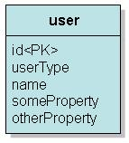

|
接續 上一個主題，Table
per
concrete
class的繼承映射方式是最簡單，但沒有效率（例如查詢同為User類型時，需要兩次SQL）且不易管理的映射方式，來看看繼承關係映射至關聯式資料庫
的第二種方式：Table per class
hierarchy。這種方式使用一個表格儲存同一個繼承階層的所有類別，並使用額外的欄位來表示所記錄的是哪一個子類別的資料。 具體來說，對於繼承User類別的DefaultUser及PowerUser，可以設計以下的表格來儲存資料：  可以使用以下的SQL來建立表格： create table T_USER (
id bigint not null auto_increment, userType varchar(255) not null, name varchar(255), someProperty varchar(255), otherProperty varchar(255), primary key (id) ) 現在所決定的是，如果要儲存的資料是來自DefalutUser，則在userType記下"Default"，如果儲存的資料來PowerUser，則 在userType記下"Power"，由userType就可以在資料從資料庫取回時，決定其該封裝為DefaultUser或是PowerUser， 在使用Hibernate的話，這要在映射文件中使用<discriminator>等相關標籤來定義，例如：
<?xml version="1.0" encoding="utf-8"?> 當然，別忘了在hibernate.cfg.xml 中指定映射文件：
<?xml version="1.0" encoding="utf-8"?> 使用 上一個主題 中的儲存程式的話，則Hibernate會使用以下的SQL來儲存資料： Hibernate:
insert into T_USER (name, otherProperty, userType) values (?, ?, 'Power') Hibernate: insert into T_USER (name, someProperty, userType) values (?, ?, 'Default') 而實際上資料表會儲存以下的內容：
缺點就是，因子類別屬性的不同，對映儲存時會有許多欄位沒有資料，但查詢效率較好，例如查詢User類型的資料時，只需一次SQL，如使用 上一個主題 中的查詢程式時，Hibernate會使用以下的SQL進行查詢： Hibernate:
select user0_.id as id0_, user0_.name as name0_, user0_.someProperty as someProp4_0_, user0_.otherProperty as otherPro5_0_, user0_.userType as userType0_ from T_USER user0_ 另一種方式是不使用一個欄位來記錄子類別的類型，這適用於您在使用一個舊資料庫，您無法新增欄位來記錄子類別類型，資料表格也許是這麼建立的： create table T_USER (
id bigint not null auto_increment, name varchar(255), someProperty varchar(255), otherProperty varchar(255), primary key (id) ) 則您可以這麼撰寫映射文件：
<?xml version="1.0" encoding="utf-8"?> 無論是DefaultUser或PowerUser，儲存時直接儲存至表格，一個儲存的例子如下： Hibernate:
insert into T_USER (name, otherProperty) values (?, ?) Hibernate: insert into T_USER (name, someProperty) values (?, ?) 在<discriminator>上，設定foumula屬性，根據傳回值為Default或Power，決定資料查詢回來後，該封裝為哪個類別的實例，一個查詢的例子如下： Hibernate:
select user0_.id as id0_, user0_.name as name0_, user0_.someProperty as someProp3_0_, user0_.otherProperty as otherPro4_0_, case when user0_.someProperty is not null then 'Default' else 'Power' end as clazz_ from T_USER user0_ 如果您需要多型查詢，而子類別屬性相對比較少時，可以使用這種映射方式。 |